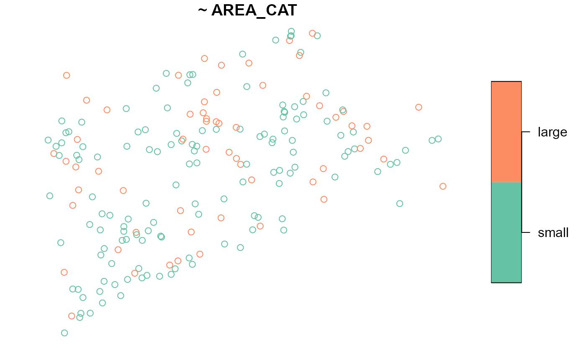
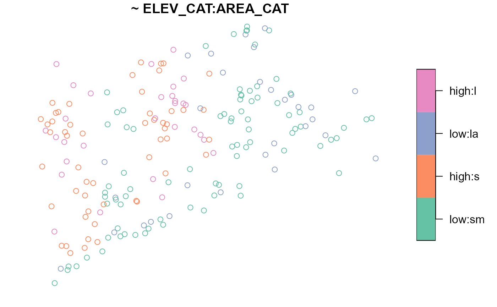
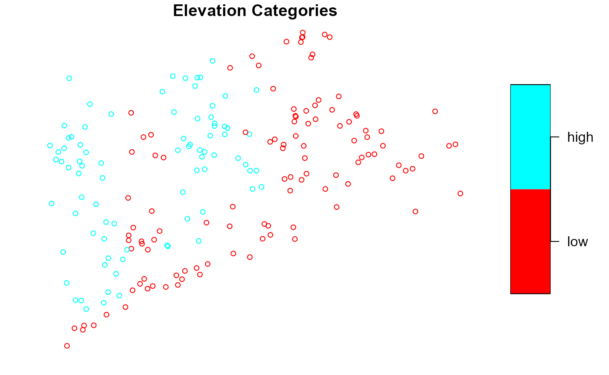
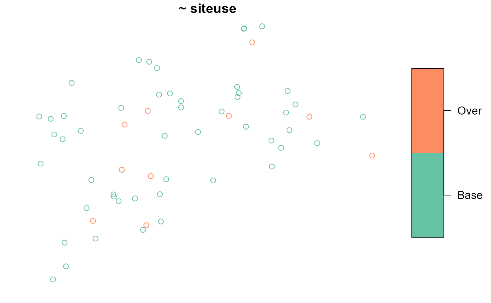
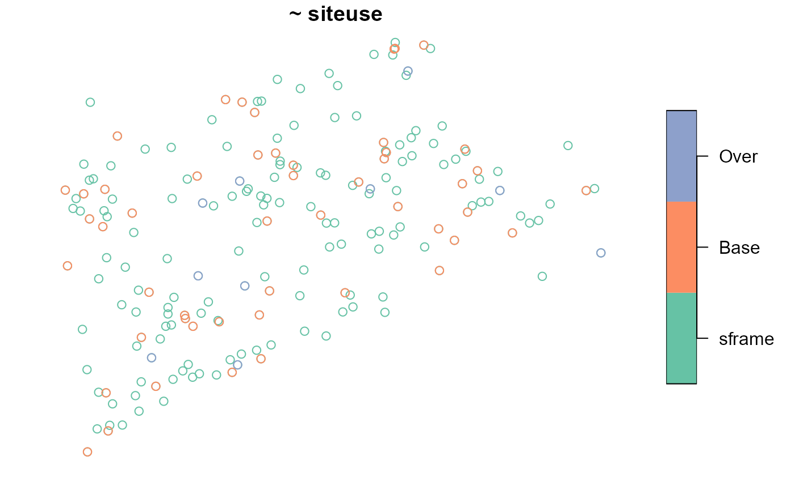
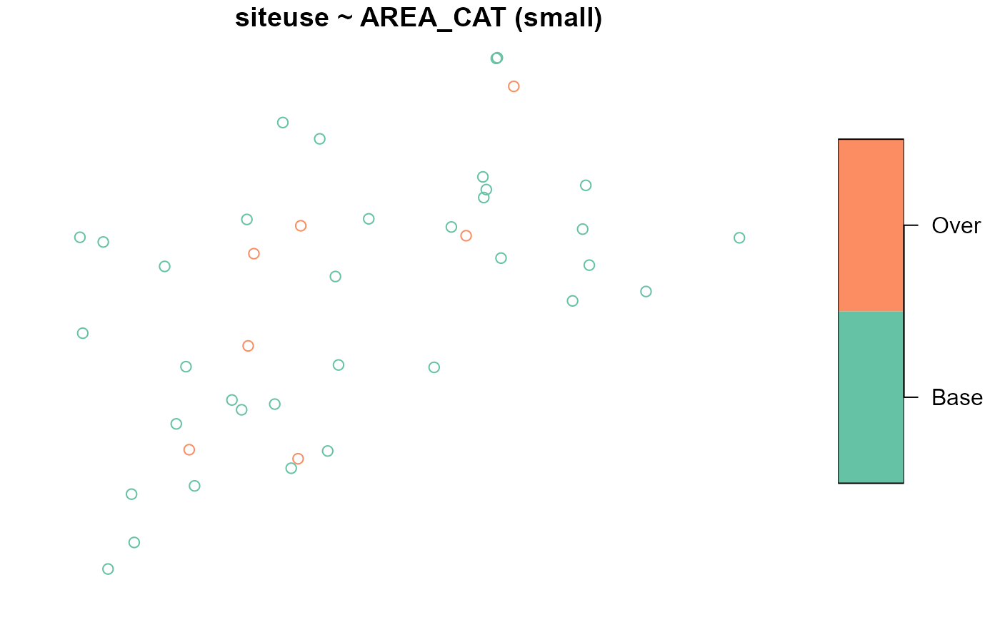
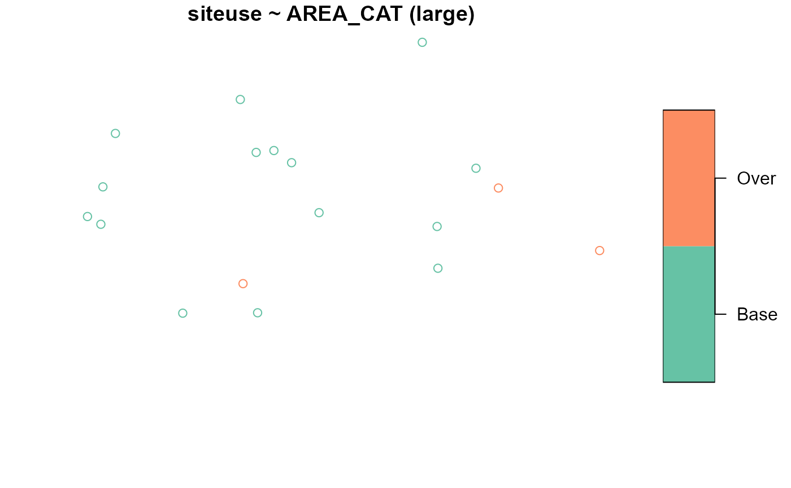
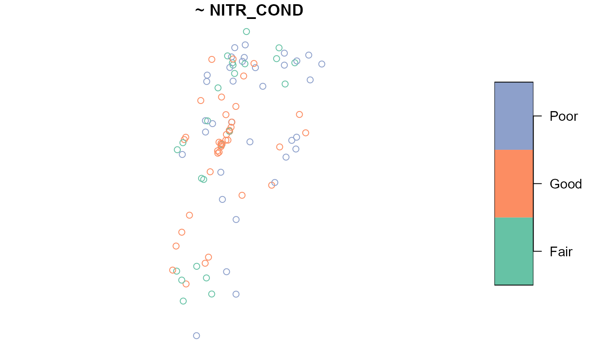
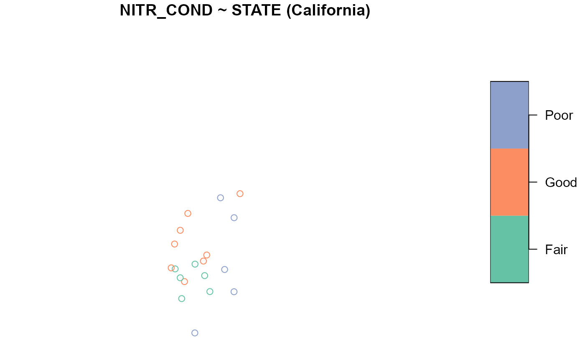
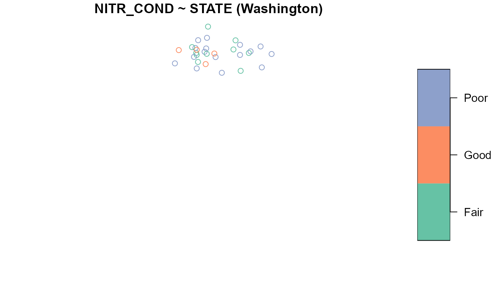

Summarizing and Visualizing Sampling Frames, Design Sites, and Analysis Data
Michael Dumelle, Tom Kincaid, Anthony Olsen, and Marc Weber
Source:vignettes/EDA.Rmd
EDA.RmdIf you have yet not read the “Start Here” vignette, please do so by running
vignette("start-here", "spsurvey")Introduction
Before proceeding, we load spsurvey by running
The summary() and plot() functions in spsurvey are used to summarize and visualize sampling frames, design sites, and analysis data. Both functions use a formula argument that specifies the variables to summarize or visualize. These functions behave differently for one-sided and two-sided formulas. To learn more about formulas in R, run ?formula. Only the core functionality of summary() and plot() will be covered in this vignette, so to learn more about these functions, run ?summary and ?plot. The sp_summary() and sp_plot() functions can equivalently be used in place of plot() and summary(), respectively (sp_summary() and sp_plot() are currently maintained for backwards compatibility with previous spsurvey versions).
The plot() function in spsurvey is built on the plot() function in sf. spsurvey’s plot() function accommodates all the arguments in sf’s plot() function and adds a few additional features. To learn more about the plot() function in sf, run ?plot.sf().
Sampling frames
Summarizing and visualizing the sampling frame is often helpful to better understand your data and inform additional survey design options (e.g. stratification). To use plot() or sp_summarize(), sampling frames must either be an sf object or a data frame with x-coordinates, y-coordinates, and a crs (coordinate reference system).
The NE_Lakes data in spsurvey is a sampling frame (as an sf object) that contains lakes from the Northeastern United States. There are three variables in NE_Lakes you will use next:
-
AREA_CAT: lake area categories (small and large) -
ELEV: lake elevation (a continuous variable) -
ELEV_CAT: lake elevation categories (low and high)
Before summarizing or visualizing a sampling frame, turn it into an object using sp_frame():
NE_Lakes <- sp_frame(NE_Lakes)One-sided formulas
One-sided formulas are used to summarize and visualize the distributions of variables. The variables of interest should be placed on the right-hand side of the formula. To summarize the distribution of ELEV, run
summary(NE_Lakes, formula = ~ ELEV)
#> total ELEV
#> total:195 Min. : 0.00
#> 1st Qu.: 21.93
#> Median : 69.09
#> Mean :127.39
#> 3rd Qu.:203.25
#> Max. :561.41The output contains two columns: total and ELEV. The total column returns the total number of lakes, functioning as an “intercept” to the formula (it can by removed by supplying - 1 to the formula). The ELEV column returns a numerical summary of lake elevation. To visualize ELEV, run
plot(NE_Lakes, formula = ~ ELEV)To summarize the distribution of ELEV_CAT, run
summary(NE_Lakes, formula = ~ ELEV_CAT)
#> total ELEV_CAT
#> total:195 low :112
#> high: 83The ELEV_CAT column returns the number of lakes in each elevation category. To visualize ELEV_CAT, run

The key.width argument extends the plot’s margin to fit the legend text nicely within the plot. The plot’s default title is the formula argument, though this is changed using the main argument to plot().
The formula used by summary() and plot() is quite flexible. Additional variables are included using +:
summary(NE_Lakes, formula = ~ ELEV_CAT + AREA_CAT)
#> total ELEV_CAT AREA_CAT
#> total:195 low :112 small:135
#> high: 83 large: 60The plot() function returns two plots – one for ELEV_CAT and another for AREA_CAT:

Interactions are included using the interaction operator, :. The interaction operator returns the interaction between variables and is most useful when used with categorical variables. To summarize the interaction between ELEV_CAT and AREA_CAT, run
summary(NE_Lakes, formula = ~ ELEV_CAT:AREA_CAT)
#> total ELEV_CAT:AREA_CAT
#> total:195 low:small :82
#> high:small:53
#> low:large :30
#> high:large:30Levels of each variable are separated by :. For example, there are 86 lakes that are in the low elevation category and the small area category. To visualize this interaction, run

The formula accommodates the * operator, which combines the + and : operators. For example, ELEV_CAT*AREA_CAT is shorthand for ELEV_CAT + AREA_CAT + ELEV_CAT:AREA_CAT. The formula also accommodates the . operator, which is shorthand for all variables separated by +.
Two-sided formulas
Two-sided formulas are used to summarize the distribution of a left-hand side variable for each level of each right-hand side variable. To summarize the distribution of ELEV for each level of AREA_CAT, run
summary(NE_Lakes, formula = ELEV ~ AREA_CAT)
#> ELEV by total:
#> Min. 1st Qu. Median Mean 3rd Qu. Max.
#> total 0 21.925 69.09 127.3862 203.255 561.41
#>
#> ELEV by AREA_CAT:
#> Min. 1st Qu. Median Mean 3rd Qu. Max.
#> small 0.00 19.64 59.660 117.4473 176.1700 561.41
#> large 0.01 26.75 102.415 149.7487 241.2025 537.84To visualize the distribution of ELEV for each level of AREA_CAT, run
plot(NE_Lakes, formula = ELEV ~ AREA_CAT)To only summarize or visualize a particular level of a single right-hand side variable, use the onlyshow argument:
summary(NE_Lakes, formula = ELEV ~ AREA_CAT, onlyshow = "small")
#> ELEV by AREA_CAT:
#> Min. 1st Qu. Median Mean 3rd Qu. Max.
#> small 0 19.64 59.66 117.4473 176.17 561.41
plot(NE_Lakes, formula = ELEV ~ AREA_CAT, onlyshow = "small")
To summarize the distribution of ELEV_CAT for each level of AREA_CAT, run
summary(NE_Lakes, formula = ELEV_CAT ~ AREA_CAT)
#> ELEV_CAT by total:
#> low high
#> total 112 83
#>
#> ELEV_CAT by AREA_CAT:
#> low high
#> small 82 53
#> large 30 30To visualize the distribution of ELEV_CAT for each level of AREA_CAT, run
Adjusting graphical parameters
There are three arguments in plot() that can adjust graphical parameters:
-
var_argsadjusts graphical parameters simultaneously for all levels of a variable -
varlevel_argsadjusts graphical parameters uniquely for each level of a variable -
...adjusts graphical parameters for simultaneously for all levels of all variables
The var_args and varlevel_args arguments take lists whose names match variable names in the formula. For varlevel_args, each list element must have an element named levels that matches the variable’s levels. The following example combines all three graphical parameter adjustment arguments:
list1 <- list(main = "Elevation Categories", pal = rainbow)
list2 <- list(main = "Area Categories")
list3 <- list(levels = c("small", "large"), pch = c(4, 19))
plot(
NE_Lakes,
formula = ~ ELEV_CAT + AREA_CAT,
var_args = list(ELEV_CAT = list1, AREA_CAT = list2),
varlevel_args = list(AREA_CAT = list3),
cex = 0.75,
key.width = lcm(3)
)
var_args uses list1 to give the ELEV_CAT visualization a new title and color palette; var_args uses list2 to give the AREA_CAT visualization a new title; varlevel_args uses list3 to give the AREA_CAT visualization different shapes for the small and large levels; ... uses cex = 0.75 to reduce the size of all points; and ... uses key.width to adjust legend spacing for all visualizations.
If a two-sided formula is used, it is possible to adjust graphical parameters of the left-hand side variable for all levels of a right-hand side variable. This occurs when a sublist matching the structure of varlevel_args is used as an argument to var_args. In this next example, different shapes are used for the small and large levels of AREA_CAT for all levels of ELEV_CAT:
Design sites
Design sites (output from the grts() or irs() functions) can be summarized and visualized using summary() and plot() very similarly to how sampling frames were summarized and visualized in the previous section. Soon you will use the grts() function to select a spatially balanced sample. The grts() function does incorporate randomness, so to match your results with this output exactly you will need to set a reproducible seed by running
set.seed(51)First we will obtain some design sites: To select an equal probability GRTS sample of size 50 with 10 reverse hierarchically ordered replacement sites, run
eqprob_rho <- grts(NE_Lakes, n_base = 50, n_over = 10)Similar to summary() and plot() for sampling frames, summary() and plot() for design sites uses a formula. The formula should include siteuse, which is the name of the variable in the design sites object that indicates the type of each site. The default formula for summary() and plot() is ~siteuse, which summarizes or visualizes the sites objects in the design sites object. By default, the formula is applied to all non-NULL sites objects (in eqprob_rho, the nonNULL sites objects are sites_base (for the base sites) and sites_over (for the reverse hierarchically ordered replacement sites)).
summary(eqprob_rho)
#> total siteuse
#> total:60 Base:50
#> Over:10
The sampling frame may be included as an argument to the plot() function:

When you include siteuse as a left-hand side variable (siteuse is treated as a categorical variable), you can summarize and visualize the sites object for each level of each right-hand side variable:
summary(eqprob_rho, formula = siteuse ~ AREA_CAT)
#> siteuse by total:
#> Base Over
#> total 50 10
#>
#> siteuse by AREA_CAT:
#> Base Over
#> small 35 7
#> large 15 3
You can also summarize and visualize a left-hand side variable for each level of siteuse:
summary(eqprob_rho, formula = ELEV ~ siteuse)
#> ELEV by total:
#> Min. 1st Qu. Median Mean 3rd Qu. Max.
#> total 0.03 26.385 65.535 135.364 214.2075 537.84
#>
#> ELEV by siteuse:
#> Min. 1st Qu. Median Mean 3rd Qu. Max.
#> Base 0.68 29.4850 81.76 148.0362 263.640 537.84
#> Over 0.03 15.1275 54.49 72.0030 119.365 209.25
plot(eqprob_rho, formula = ELEV ~ siteuse)Analysis data
sp_summarize() and plot() work for analysis data the same way they do for sampling frames. The NLA_PNW analysis data in spsurvey is analysis data (as an sf object) from lakes in California, Oregon, and Washington. There are two variables in NLA_PNW you will use next:
-
STATE: state name (California,Washington, andOregon) -
NITR_COND: nitrogen content categories (Poor,Fair, andGood)
Before summarizing or visualizing a sampling frame, turn it into an object using sp_frame():
NLA_PNW <- sp_frame(NLA_PNW)To summarize and visualize NITR_COND across all states, run
summary(NLA_PNW, formula = ~ NITR_COND)
#> total NITR_COND
#> total:96 Fair:24
#> Good:38
#> Poor:34
Suppose the sampling design was stratified by STATE. To summarize and visualize NITR_COND by STATE, run
summary(NLA_PNW, formula = NITR_COND ~ STATE)
#> NITR_COND by total:
#> Fair Good Poor
#> total 24 38 34
#>
#> NITR_COND by STATE:
#> Fair Good Poor
#> California 6 8 5
#> Oregon 8 26 13
#> Washington 10 4 16